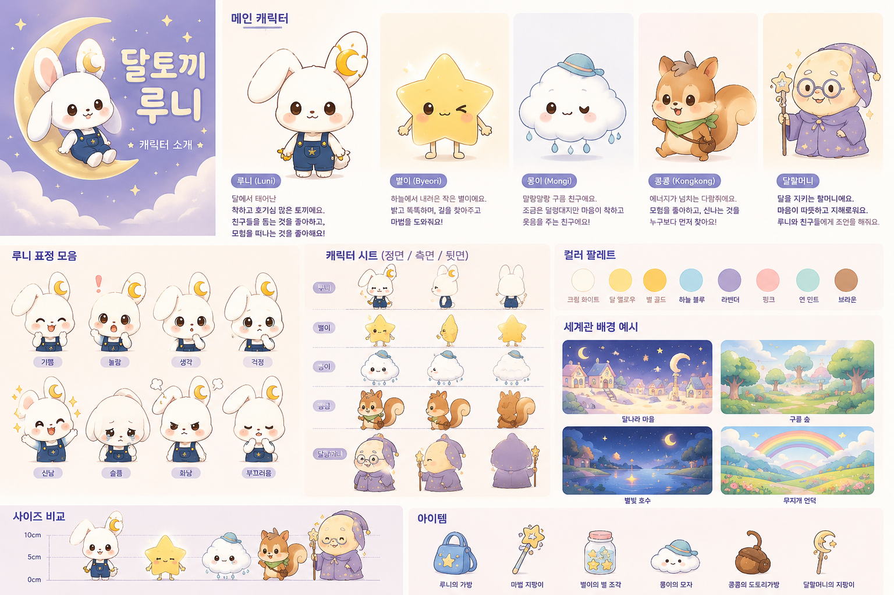

KOREAN KIDS ANIMATION · STUDIO BIBLE
Une petite aventure
sous la lumière de la lune
Une série animée coréenne de 5 minutes où Luni, le lapin de la Lune, découvre les émotions, l’amitié, la nature et le courage.
{kind=link}
- 100
- épisodes
- 4
- saisons
- 5 min
- par épisode

THE WORLD OF LUNI
Chaque nuit, le monde lunaire
ouvre une nouvelle histoire
Le village lunaire abrite le Lac des Étoiles, la Forêt des Nuages et la Colline Arc-en-ciel. En suivant les petites missions de Grand-mère Lune, Luni découvre des réponses, mais surtout la valeur de l’entraide.
Maison de LuniVillage de la LuneForêt des NuagesLac des ÉtoilesColline Arc-en-cielGare des ÉtoilesJardin des RêvesBibliothèque Magique
MEET THE FRIENDS
Luni et ses sept amis
Huit personnalités différentes forment une équipe tendre et complémentaire.
100 EPISODE ROADMAP
Quatre saisons pour grandir
Les titres et les contenus de diffusion restent en coréen. Les outils de production sont présentés en français.
5-MINUTE FORMAT
Le rythme d’un épisode
- 00:00–00:30Salutation de Luni et question du jour
- 00:30–01:30Apparition d’un petit problème
- 01:30–03:30Exploration et essais avec les amis
- 03:30–04:30Solution et leçon exprimée simplement
- 04:30–05:00Chanson finale à reprendre ensemble
PRODUCTION KIT
Contenu du dépôt GitHub
- Site de présentation adaptatif
- Fiches des 8 personnages et planche visuelle
- 100 synopsis uniques répartis en 4 saisons
- Modèle de production pour un épisode de 5 minutes
- Prompts IA pour la cohérence des scènes
- Instructions de publication sur GitHub Pages